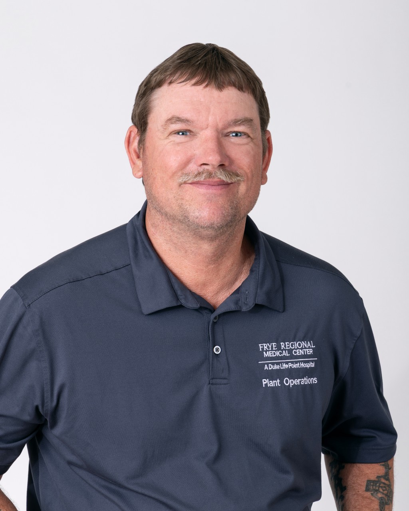

Lifepoint Health serves patients, clinicians, communities and partners across the healthcare continuum. Our diversified healthcare delivery network extends from coast to coast, consisting of community hospitals, rehabilitation and behavioral health hospitals, and additional sites of care.
Our dedicated employees are unified by a mission of making communities healthier® — and they live it out in ways big and small every day.
Featured story
Our Mercy Awards program memorializes the legacy of the late Scott Mercy, Lifepoint's founding chairman and CEO, by celebrating people in the Lifepoint family who demonstrate his caring spirit and reflect the core values of our company. Learn more about the Lifepoint Mercy Award and meet our 2025 Mercy Award winner, Jackie Mcelyea.

Our commitment to high quality care, patient safety and clinical excellence is deeply embedded in who we are and reflected in how we operate our facilities. Everyone has a voice and plays a vital role in advancing quality and safety. We prioritize and invest in the staff, technology and infrastructure our physicians, providers, partners and patients need to succeed.
Lifepoint pursues collaborations that advance healthcare quality and value, enhance patient, family and employee experiences, and improve access to care.
We explore and implement cutting-edge ideas, partnerships and technologies that meet patient and provider needs, drive growth and advance our mission — both within our communities and beyond.
March 18, 2026
Patients identified through incidental findings are 6.2x more likely to be diagnosed with breast cancer compared to screening.
March 6, 2026
Lifepoint Health today announced that it has signed an agreement with ScionHealth for Lifepoint to acquire eight ScionHealth acute care hospitals. The transaction would expand the company's presence in Idaho, Mississippi, Tennessee, Texas, West Virginia and Wisconsin.
September 4, 2025
Frye Regional Medical Center employee awarded company's highest honor.